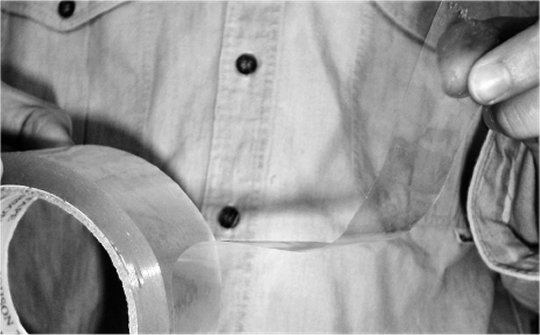
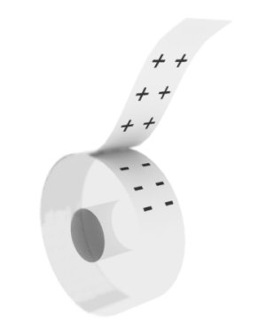
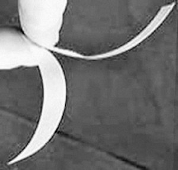
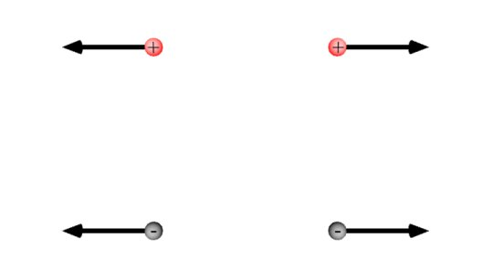

Producerea şi utilizarea curentului continuu |
Curentul electric |
A-1. |
Interacţiuni electrice |
 Activitatea experimentală 1-1
Activitatea experimentală 1-1
Investighează interacţiuni asemenea celor observate în cazul chihlimbarului, folosind materiale la îndemână. Lucrează
individual.
Desfă de pe o rolă de bandă adezivă o fâşie lungă de aproximativ 15 cm şi tai−o.
Ţine−o, cu o mână, atârnată de un capăt şi apropi−o de rola de pe care ai desfăcut−o (figura 1−1).

Figura 1-1. Interacţiunea dintre o fâşie de bandă adezivă şi rola de pe care a fost desfăcută.
Observi vreo interacţiune între bandă şi rola de pe care ai desfăcut−o?
Prin desprindere, banda desprinsă şi cea rămasă pe rolă s−au electrizat şi interacţionează electric (se
atrag). O parte dintre electronii de pe partea adezivă a benzii care se desprinde trec pe partea netedă a benzii rămasă pe
rolă (figura 1−2).
|  |
Figura 1−2. O parte dintre electronii de pe partea adezivă a benzii care se desprinde
trec pe partea netedă a benzii care rămâne pe rolă.
|
Banda desprinsă are un deficit de electroni, iar banda rămasă pe rolă are un exces de electroni.
Protonii (constituenţi, alături de neutroni, ai nucleelor atomilor) şi electronii sunt purtători de sarcină electrică
− proprietatea care îi face să interacţioneze electric.
Convenţional, considerăm sarcina electrică a protonilor pozitivă, iar cea a electronilor, negativă.
 Purtătorii de sarcină având semne contrare interacţionează electric
atrăgându−se reciproc
Purtătorii de sarcină având semne contrare interacţionează electric
atrăgându−se reciproc. (figura 1−3)
Activitatea experimentală 1-2
Investighează cum interacţionează electric corpurile electrizate identic. Lucrează individual.
Desfă de pe o rolă de bandă adezivă o fâşie lungă de aproximativ 15 cm şi tai−o.
Prinde capătul superior al benzii de marginea mesei, apoi desfă de pe rolă şi taie încă o fâşie, tot atât de lungă.
Apropie cele două fâşii (figura 1−4).
|  |
Figura 1−4. Interacţiunea dintre două fâşii de bandă adezivă desprinse de pe aceeaşi rolă.
|
Observi vreo interacţiune între fâşiile desprinse de pe aceeaşi rolă?
Ambele fâşii au deficit de electroni (exces de sarcină electrică pozitivă) şi interacţionează electric respingându−se
reciproc.
Purtătorii de sarcină având acelaşi semn interacţionează electric
respingându−se reciproc. (figura 1−5)

Figura 1-5.
Purtătorii de sarcină având acelaşi semn interacţionează electric respingându−se reciproc.
Electronii şi protonii sunt purtători elementari de sarcină electrică. Un electron are o sarcină elementară negativă, iar
un proton o sarcină elementară pozitivă.
Cantitatea de sarcină electrică a unui corp este un număr întreg de
sarcini electrice elementare.
 Provocarea 1-1
Provocarea 1-1
Câţi electroni sunt într−o monedă de aluminiu de 500 lei (vechi)?
Câţi protoni sunt în aceeaşi monedă, dacă aceasta este neutră electric (sarcina electrică totală a acesteia este nulă)?
Corpurile obişnute conţin un număr imens de sarcini elementare. De aceea, în Sistemul Internaţional de unităţi utilizăm o
altă unitate de măsură pentru cantitatea de sarcină electrică:
Coulombul (simbol C) este cantitatea de sarcină electrică egală cu
6,25·1018 sarcini electrice elementare.
Astfel, o sarcină electrică elementară este:
1 e = 1,60·10-19 C.